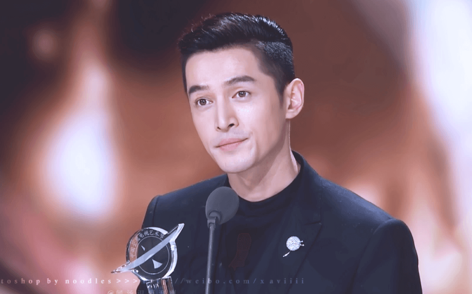
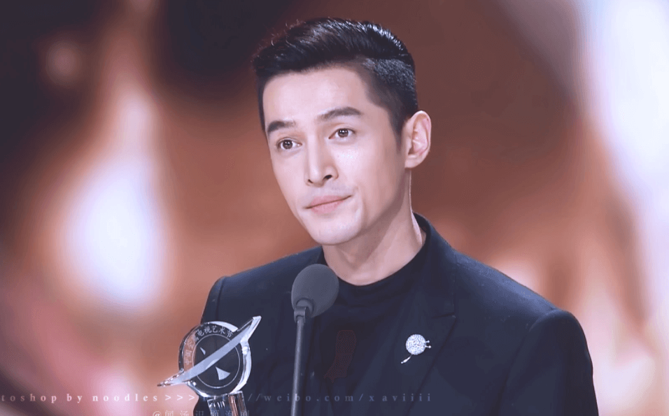

胡歌（1982年9月20日－），男，籍贯江苏无锡，生于上海，中国大陆演员、歌手，毕业于上海戏剧学院表演系。电视剧代表作有《仙剑奇侠传》系列、《神话》、《琅琊榜》等。2015年凭《琅琊榜》获“第22届白玉兰奖最佳男主角”、“第28届中国电视金鹰奖观众喜爱的男演员及最具人气男演员”“2015国剧盛典最佳男主角”等荣誉。
| 年份 | 具名 | 角色 |
|---|---|---|
| 2004年 | 蒲公英 | 程灏 |
| 2005年 | 仙剑奇侠传 | 李逍遥 |
| 天外飞仙 | 董永 | |
| 2006年 | 少年杨家将 | 杨延昭（杨六郎） |
| 别爱我 | 徐风 | |
| 2008年 | 射雕英雄传 | 郭靖 |
| 2009年 | 仙剑奇侠传三 | 景天、龙阳、李逍遥、飞蓬 |
| 2010年 | 神话 | 蒙毅、易小川 |
| 苦咖啡 | 陈琮 | |
| 2011年 | 香格里拉 | 扎西平措 |
| 无懈可击之高手如林 | 徐然 | |
| 摩登新人类 | 谢非凡 | |
| 2012年 | 轩辕剑之天之痕 | 宇文拓、剑痴 |
| 2014年 | 爱情公寓4 | 迪诺 |
| 生活启示录 | 鲍家明 | |
| 风中奇缘 | 莫循 | |
| 四十九日·祭 | 戴涛 | |
| 2015年 | 伪装者 | 明台(黎家鸿) |
| 琅琊榜 | 梅长苏、苏哲、林殊 | |
| 大好时光 | 袁浩 | |
| 2016年 | 旋风十一人 | 穆奇 |
| 2017年 | 外科风云 | 胡歌 |
| 猎场 | 郑秋冬 |
2013年话剧《如梦之梦》在北京举行内地首演，每场演出长达八小时。胡歌化身为患有绝症的“五号病人”，在舞台上一遍遍演绎和感受角色的心路历程。2015年，他在央视的采访中坦言，这8小时的演出，就像是一次心灵的旅程。胡歌在话剧表演中找到了真正的乐趣：“那就是作为演员的幸福感。幸福感其实很简单，就是演了一场很牛的戏，就能高兴好几天”。他自2013年起坚持每年演出话剧《如梦之梦》至今。
本书创作于胡歌车祸后，发行于2007年6月。记录了他治疗期间的心路历程。 因车祸撞碎了他的生活和事业，他能做的只有拾起那些碎片，但在这样拾荒的过程中，得到了很多人的关爱，因而将书名定为《幸福的拾荒者》。 本书由接力出版社出版，分为序言、“旦夕祸福”、“怀念"冕"”、“寻找过去”、“柳暗花明”、“朋友，镜子”六部分。收录了胡歌自己的文章以及陈龙、陈秀雯、何炅、林依晨、谢娜、黄磊、何润东、徐若瑄、曾宝仪等艺人好友写给胡歌的祝福信，还有胡歌的经纪人蔡艺侬写的一篇《不离不弃》。2009年10月，他将《幸福的拾荒者》一书的全部版税收益与自己的片酬捐赠给慈善机构苗圃行动，在云南省威信县石坎村建立了一所希望小学，以在车祸中过世的好友张冕命名。 至今胡歌与粉丝都会不定期地捐赠物资到张冕希望小学。